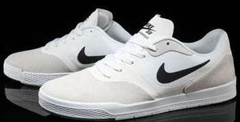

Sponsors
As of January 12, 2015, P-Rod is sponsored by Primitive Skateboarding, Nike Skateboarding, Mountain Dew, Target, Nixon Watches, Incase Desings, Primitive Skateshop, Glassy Sunhaters, Markisa, Venture, Andale Bearings, Diamond Supply Co., Grizzly Griptape and FUSE Science.
Rodriguez continues to be a senior team rider for the Nike skateboarding division, having released his eighth skate shoe model in May 2014, and was responsible for welcoming team rider, Luan Oliviera, in September 2012. Rodriguez released his first signature Nike shoe in 2005 following his departure from skate shoe brand, eS.
P-Rod was one of a few skateboarders to form the Nike SB team, and later, Paul was the first skateboarder to be endorsed as an official Nike Athlete, as well as the first Mexican American to earn a signature shoe for Nike. Rodriguez released his seventh signature model shoe, entitled the "Paul Rodriguez 7," with Nike in mid-2013. The "P-ROD 8", Rodriguez's eighth signature shoe was released in May 2014. The P-ROD 8 features three of Nike's shoe technology developments: "Lunarlon", "Flywire" and "Hyperscreen". Rodriguez was informed by a Nike executive that he is one of only four Nike athletes to have produced eight signature shoe model the other three are: Michael Jordan, Kobe Bryant and LeBron James.
On August 13, 2010, the Target corporation announced in a press release that Rodriguez had joined its sponsorship. Rodriguez is the second professional skateboarder to negotiate a sponsorship deal with Target.
As of June 2014, Rodriguez has been sponsored by Nike for 10 years. But since of 2015, it has been 11 years.
{kind=link}